Ultrasound imaging offers a safe, inexpensive method for obtaining medical data. It is also desirable in that data can be acquired at real-time rates and the necessary hardware can be compact and portable. The work presented here documents our attempts at providing interactive 3-D visualization of ultrasound data. We have found two public domain volume rendering packages to be quite useful and have extended one to perform stereographic volume visualization. Using a relatively inexpensive pair of commercial stereo glasses, we believe we have a found a combination of tools that offers a viable system for enhancing 3-D ultrasound visualization.
Ultrasound is the imaging modality of choice in many medical situations because it provides very useful information for diagnosis and is safe and inexpensive. In current practice, ultrasound produces only two-dimensional images, representing slices through the body. These can be quite difficult to interpret, and require the ultrasonographer to mentally integrate the information to form an image of the suspect area. Considerable skill is often required even to position the sensor so as to acquire a potentially useful image or combination of images.
If these difficulties could be addressed, ultrasound could provide a diagnostically valuable, low-cost imaging modality suitable for situations where a rapid diagnosis at a remote site is needed. Currently, the Army (through the ARPA Advanced Biomedical Technologies Initiative) is looking to develop a portable 3-D ultrasonic imaging system for use in diagnosing battlefield injuries. Our work is sponsored by that initiative.
Three-dimensional (3-D) ultrasound offers the potential to alleviate the problems addressed above. Because 3-D volumes show more context than 2-D slices, it becomes easier for users to understand spatial relationships and detect abnormal conditions. Positioning the sensor so as to acquire useful images is also easier with 3-D, because volumetric data can readily be rotated and realigned to good viewing positions, largely independent of the original sensor position.
In order to make 3-D ultrasound a practical reality, however, improvements are required in two areas. The first area requiring improvement is 3-D ultrasound image acquisition. One approach is to mechanically scan the sensor head of a conventional ultrasound unit, perpendicular to its imaging plane, so as to produce a sequence of conventional B-scan images. The sequence is then treated as a 3-D image. This approach is reasonably easy and effective, but suffers from long image acquisition time (seconds) and from relatively poor focus along one axis due to the thickness of the ultrasound beam. A second approach is to use 2-D arrays of unfocused transducers, combined with holographic or synthetic aperture reconstruction techniques. This approach potentially offers both rapid image acquisition and excellent resolution on all axes, but requires a high computational rate in order to run in real time. At this time, ultrasonic holographic array technology is only at the proof-of-principle stage. Both approaches are being pursued by an ARPA-funded research project currently underway as a collaboration between Battelle Northwest and Madigan Army Medical Center.
The second area requiring improvement is 3-D volumetric display. Ultrasound presents some difficulties that are not found in other 3-D imaging modalities such as CT and MRI. Foremost among these are that 1) ultrasound images are typically quite "cluttered", with significant backscatter and intensity variations occurring throughout tissue volumes, and that 2) because of image aperture limitations and because ultrasound is inherently directional, the apparent brightness of tissues and interfaces depends on their position and orientation. Combined, these two aspects make it extremely difficult to explicitly reconstruct anatomically correct 3-D surfaces from ultrasound images. This is a sharp contrast to CT and MRI, where explicit surface reconstruction and display is often the method of choice. Thus, in dealing with 3-D ultrasound, we are faced with the dilemma that humans are not good at visualizing 3-D "clouds" of data, but that is exactly what the imaging process provides. An excellent article that presents the state of the art circa 1992 is found in [Bajura]. Our work aims to address two open-ended problems discussed in that work: visual cues and real-time volume visualization.
We have had good success in producing easily interpreted displays of 3-D ultrasound data through a unique combination of individually standard display techniques, including:
The remainder of the paper is outlined as follows: in the next section section, we provide a general introduction to volume visualization and discuss existing algorithms for visualizing 3-D medical data. Section 3 describes our experiences using volume rendering to visualize 3-D ultrasound data. The last section summarizes and discusses plans for future related work.
Volume visualization can be defined as a process that uses computer graphics to display structure contained in a three-dimensional dataset. This volumetric dataset can be thought of as a discretized function, F, over some bounded domain. The domain's topology varies from one application to another, but quite often is rectilinear:
This is a generalization of the "cuberille" model [Chen] where the spacings, dx,dy,dz, along the three orthogonal axes are equal. CT and MR data typically have equal spacing along intra-slice directions (dx=dy), but the distance (dz) between slices is often larger in order to minimize ionizing radiation exposure. Scanned ultrasound data often has the same format. The remainder of this section will be in the context of rectilinear volumetric scalar data.
There are currently two general techniques for visualizing volumetric data: surface rendering and volume or direct rendering. They are inherently different in both the underlying algorithms and the results produced. We provide an overview of the more popular algorithms in the remainder of this section. The distinction in the results produced by the two techniques is that a surface renderer typically generates polygonal geometry, whereas a volume renderer generates an image. Because surface rendering preceded volume rendering in the genealogy of computer graphics algorithms, graphics workstations have evolved to be extemely fast polygon renderers. This, at least in part, accounts for the large collection of papers and software aimed at surface rendering. Volume rendering has become increasingly popular since the SIGGRAPH '88 publication of three papers on the subject [Sabella,Upson,Drebin]. There seems to be an ongoing debate as to whether surface rendering or volume rendering is superior. Little information is published that tries to make a comparison between the two [Udupa]. As we hinted in the Introduction, certain medical imaging modalities may lend themselves better to one visualization technique over another.
Probably the most prevalent algorithm to perform surface rendering on volumetric data is Marching Cubes [Lorenson]. This algorithm constructs a polygonal isosurface from rectilinear scalar data as follows:
The SIGGRAPH '88 papers mentioned above offer a glimpse into the classification of volume rendering algorithms. The two broad classes are image-order and object-order. An image-order algorithm casts rays from image pixels into the volumetric data. For each voxel that a ray intersects, relevant information is accumulated to compose the final pixel value. An object-order algorithm operates on the volumetric data in memory-order and essentially projects (splats) the voxels onto the image in either front-to-back or back-to-front order. The front-to-back method is essentially a volumetric Z-buffer algorithm. What these two classes of algorithms have in common is the basic functionality of mapping the scalar volumetric data, F, into both an intensity (color) function, I(F(x,y,z)), and an opacity function, O(F(x,y,z)). These are collectively known as transfer functions. Allowing a user to (interactively) modify these functions permits improved visualization of relevant structure(s) within the data.
Drebin et al presented an algorithm for transforming the shaded volumetric data into the viewing coordinate system to allow for a projection, via compositing [Porter], along an axis of the stored volume. This work was clarified and extended in [Hanrahan] which decomposed the viewing transformation into a sequence of three shearing matrices. A further improvement to this basic concept of aligning voxels (object space) with pixels (image space) is described in [Lacroute94]. In this work, object space is mapped into a sheared object space which is ideally suited for projecting (compositing) into image space. Furthermore, the authors take advantage of spatial coherence by implementing scanline-based data structures in both object space and image space in order to speed up the rendering algorithm. Moreover, they offer three variants of the algorithm:
Another volume-rendering technique uses 3-D texture hardware to speed up the projection of object space to image space [Cabral,Cullip]. One such architecture capable of performing this is the Silicon Graphics RealityEngine. SGI has a public domain implementation of such an algorithm, known as Volren.
We wanted to first render this particular dataset using a volume rendering technique and therefore downloaded the Volren package. After converting our data into TIFF images, one of the required formats for Volren, we discovered that our machine had only enough texture memory to handle a 128x128x64 (or equivalent size) volume. We therefore averaged our 128 slices down to 128x128 resolution and then averaged pairs of slices to obtain a 128x128x64 volume. Figure 1 shows the resulting volume rendering as well as the Volren graphical user interface (GUI). We found Volren to be a very powerful tool for demonstrating the concept of volume rendering to others. The GUI allowed for interactive control of transfer functions that we did not expect to be possible at the beginning of our project. Combined with dynamic viewing (rotation and scaling), Volren provided us terrific initial results. However, with the demand for the SGI Onyx RealityEngine at a premium, we sought other avenues for visualizing our volumetric data.
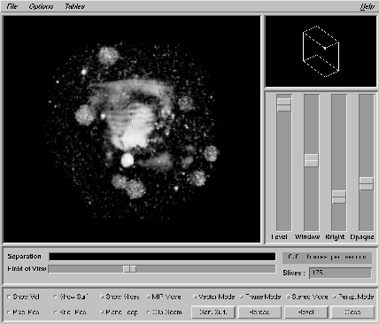
Figure 1. Breast phantom data rendered using Volren.
To satisfy our curiosity at how well a surface renderer would perform on this same data, we computed several isosurfaces of differing isovalues. Figure 2 shows one such surface that closely resembles the Volren rendering. (The isosurfaces were computed and rendered using the AVS visualization package.)
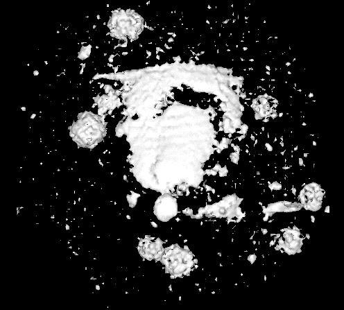 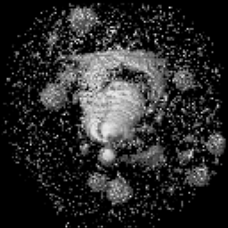
Figure 2. Isosurface of breast Figure 3. Volume rendering
phantom data. using VolPack.
Next, we downloaded the VolPack volume rendering library and began learning the mechanics of it. There is sufficient documentation in the form of a user's guide, man pages, and example datasets and programs. Though we were no longer bound by the texture memory limit, we kept the breast phantom data at 128x128x64 for comparison. Figure 3 shows an image rendered using VolPack with appropriately chosen transfer functions to approximate the Volren and isosurface renderings.
Figure 4 is the first frame in an MPEG animation showing a rotation of the breast data. These images were generated using the VolPack library. Note that depth-cueing is a user-specified option.
Figure 4. MPEG rotation (164K, 128x128)
In Figure 5, we show a volume rendered image, using Volren, of the face of a fetus with a cleft palate. The data was taken with a conventional B-scan ultrasound imaging unit. The original volume consists of 50 slices at 190x236 resolution. Figure 6 is the first image of an MPEG animation generated using VolPack. Note the shadows which, in addition to the lighting model, serve as helpful 3-D visual cues. Here, we have chosen transfer functions that allow for deeper penetration of the facial skin in an attempt to visually reveal the cleft palate.
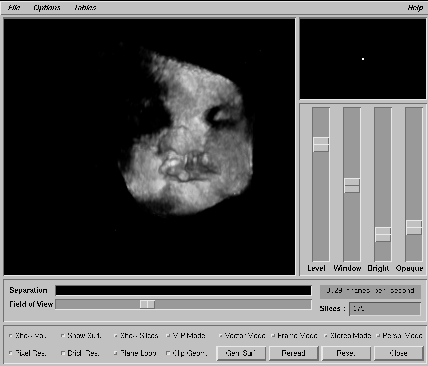 Figure 5. Volren on fetus face.
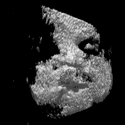 Figure 6. MPEG animation (272K, 256x256)
Figure 7 shows the image from a volume rendering of another fetus dataset. Again the related MPEG animation was generated using VolPack and demonstrates its scaling and translation transformations.
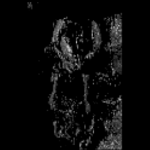 Figure 7. MPEG animation (107K, 256x256)
One of our goals for this project was to provide stereoscopic displays of volume rendered images. Using the VolPack library, we generated left and right stereo pairs of images. From these we could provide either cross-eye stereo pairs or interlaced scanline stereo images which we viewed using the Virtual i.o i-glasses! shown in Figure 8.
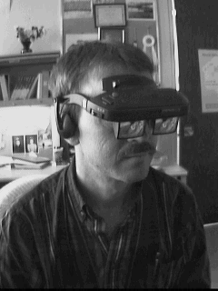 Figure 8. The Virtual i.o i-glasses!
Figures 9 and 10 are MPEG rotations (fast and slow) of cross-eye stereo images. Figure 11 is an MPEG rotation of interlaced scanline stereo images which can be properly viewed wearing a pair of i-glasses!.
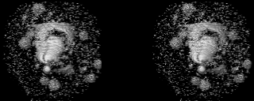 Figure 9. MPEG rotation (132K, 320x128)
Figure 10. MPEG rotation (unavailable) (486K, 320x128)
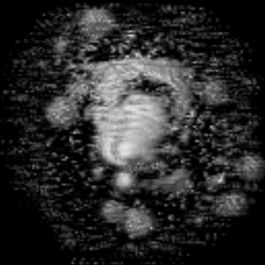
In addition to visualizing ultrasound data, we also experimented with volume-rendering CT and MR data from the Visible Human Project. Figure 12 shows a slice of CT data from the lower abdomen with clipping lines that we used to delimit a subregion around the spine. Extracting a volume of data in this fashion, we used the VolPack library to generate the images in Figures 13 and 14. Here we have chosen appropriate transfer functions to hilight the spine (bone) from the rest of the tissue.
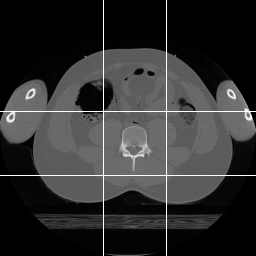 Figure 12. CT slice with clipping lines.
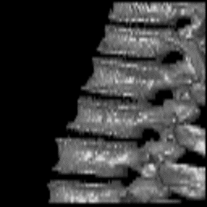 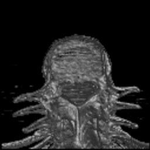
Figure 13. Lower spine Figure 14. Another view.
from CT data.